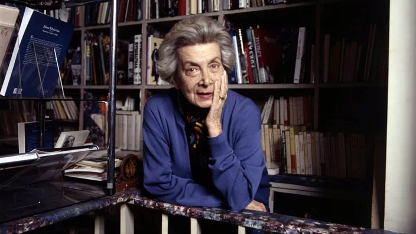
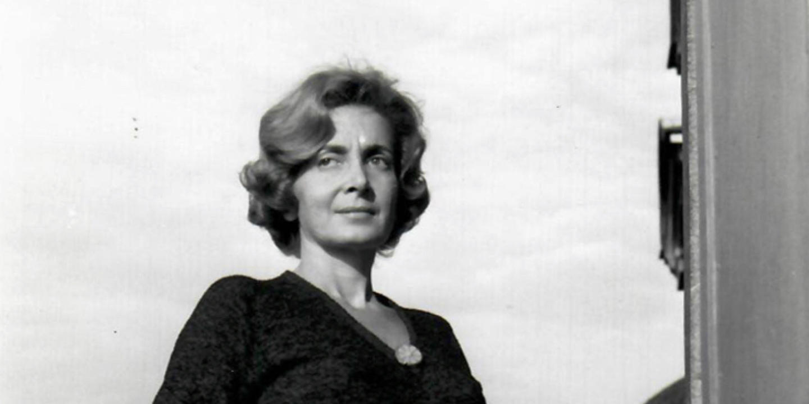

Née au Caire le 20 mars 1920, Andrée Saab se forme à l'université américaine de la ville en arabe, en anglais et en français. Très tôt, elle se consacre à la poésie et au roman. Après s'être mariée en 1942 à Louis Selim Chedid au Liban, elle part s'installer à Paris et acquiert la nationalité française. Dès lors, elle ne publie presque qu'en langue française. Des romans dans lesquels elle fait fleurir un imaginaire effarant, né de ses influences occidentales et orientales.
Andrée Chedid est une femme de lettres et poétesse française d'origine libanaise chrétienne. Elle est la mère du chanteur Louis Chedid et de Michèle Chedid-Koltz, peintre, et la grand-mère du chanteur Matthieu Chedid. Elle fait ses études dans des écoles françaises, puis elle intègre l'Université américaine du Caire. Elle apprend l'anglais et perfectionne son français. Elle rêve d'être danseuse. Elle se marie avec un médecin à 22 ans. En 1942, elle part vivre au Liban avec son mari. C'est en 1946 qu'elle s'installe définitivement à Paris, où elle commence à publier ses recueils de poésie.
